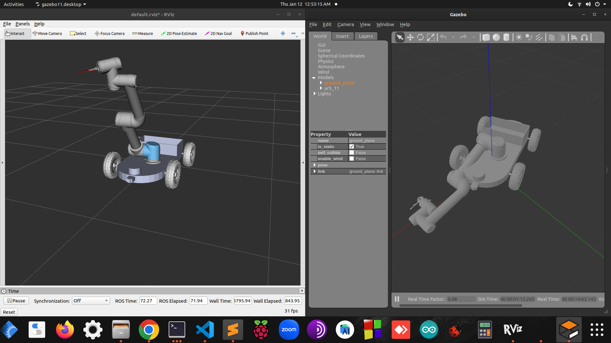

Robotics Arm and AGV(Autonomous Ground Vehicle) Project
A detailed overview of the Robotics Arm and Autonomous Ground Vehicle (AGV) project.
Project Overview
Year 2050, robots are widely deployed in dangerous scenarios to replace human workers. The purpose of this project was to integrate state estimation, planning, and control components in both a robotic arm and an Autonomous Ground Vehicle (AGV). The project demonstrated how these components work together to perform tasks such as picking up objects and navigating through environments without need of humans.
In the robotic arm scenario, the goal was to replace human workers in dangerous scenarios. The robotics arm was programmed to pick up items like a tray, a can, and a wallet from a conveyor belt and place them in designated locations. This involved using a particle filter for object detection and inverse kinematics for path planning.

In the Car Project: Rescue Cathy, the scenario is set in a hospital where an AGV is used for a critical rescue mission. The AGV navigates through rooms to collect medicines and triggers a call for a doctor. The AGV uses a particle filter for localization and a planner to determine the optimal path through the rooms. The sequence of room visits must be planned carefully to maximize the patient's survival time.
Skills
- ROS (Robot Operating System)
- Path Planning Algorithms
- Particle Filtering Techniques
- Inverse Kinematics
- Python Programming
- Robot Control Systems
- Autonomous Navigation
- Problem-Solving
- Project Management
- Technical Documentation